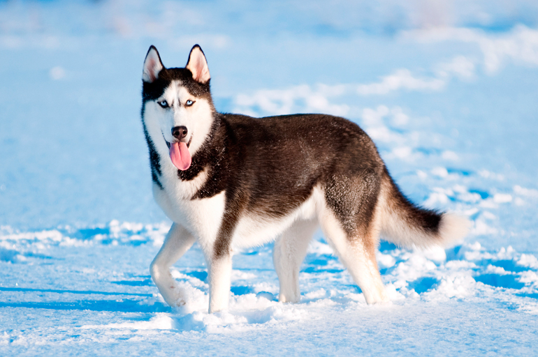

|
El husky siberiano es una raza de perro de trabajo originaria del noreste de Siberia (Chukotka, Rusia). Este perro fue creado por la tribu Chukchi como perro de trabajo para tirar de los trineos a través de largas distancias durante sus partidas de caza, sirviendo así como vehículo de transporte rápido para las presas de la vuelta al poblado. Al contrario de lo que narra la creencia popular, esta raza jamás tuvo un función de perro pastor ya que el pueblo Chukchi, originalmente, no mantenía ganado propio. | |
| Idioma | Español | |
|---|---|---|
| Raza | Perro | |
|  | Debido a las condiciones climáticas de sus tierras natales, su pelaje no solo les servía como protección propia ante tan bajas temperaturas, sino que también les brindó un lugar dentro de las tiendas de la tribu, ayudando a mantener calientes a los niños durante la noche. Por ello, el perro Chukchi (como era conocido originalmente), era muy apreciado también (e incluso gratamente reconocido por otras tribus), por su aportación al núcleo familiar, a pesar de ser realmente un perro de trabajo activo. Desde su importación a tierras estadounidenses a principios del siglo XX, podemos encontrar esta raza en cualquier parte del mundo. | |
| Idioma | Ingles | |
| Raza | Perro | |
Autor:Roberto Brines
Volver al inicio